Tech Forward Indonesia
Peran: Mentor Data Analytics
Durasi: Mar 2023 - Sekarang
Deskripsikan kegiatan mentoring Anda di sini. Contoh:
- Membimbing 5 mentee dalam menyelesaikan proyek analisis data end-to-end.
- Memberikan sesi konsultasi karir dan persiapan interview di bidang data.


 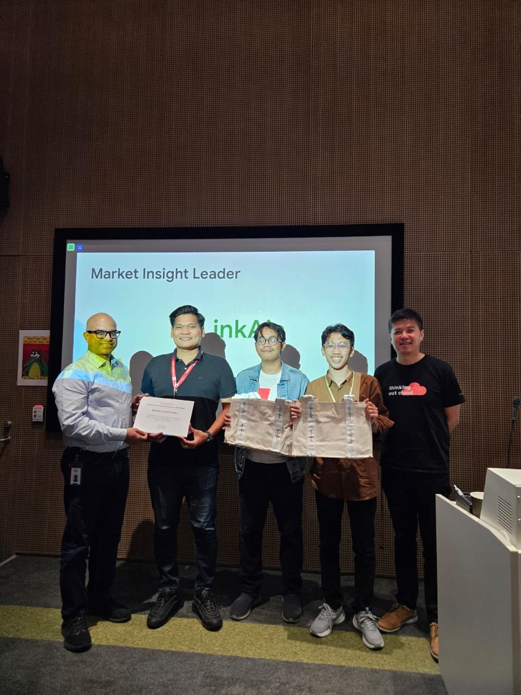
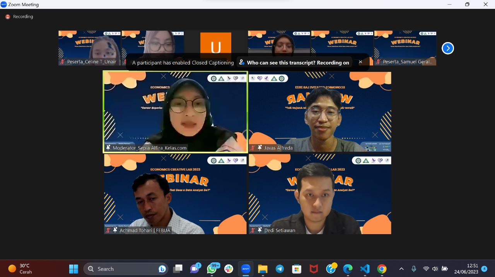
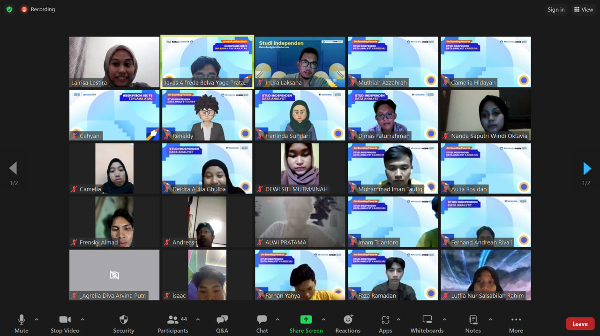
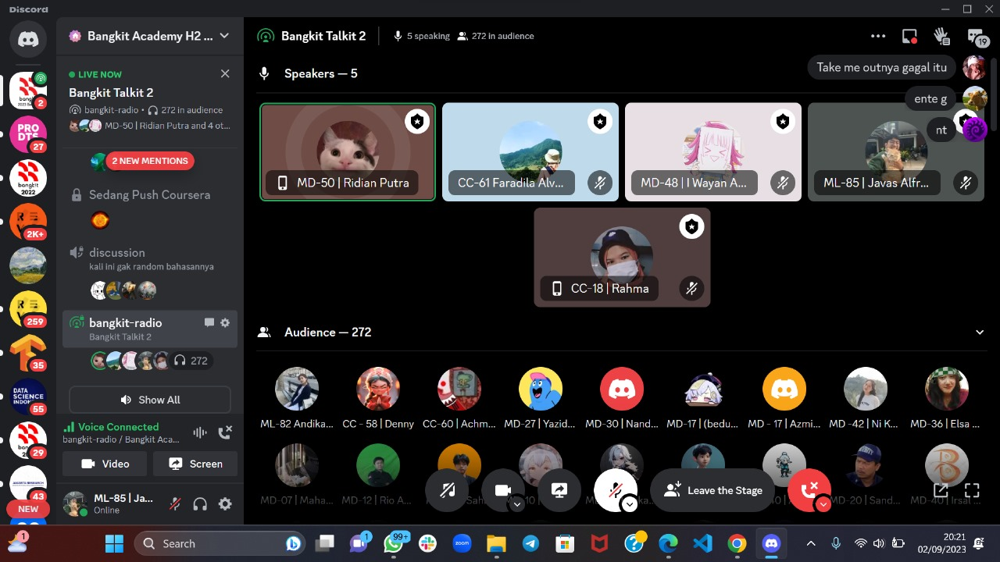
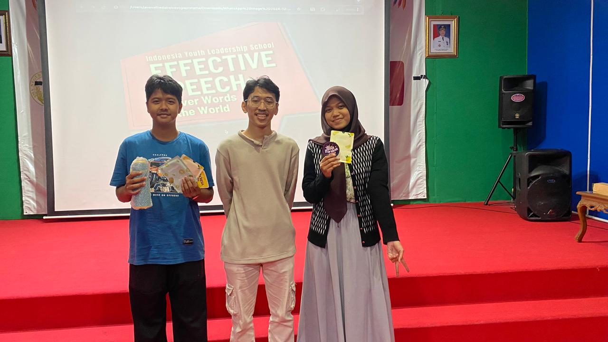
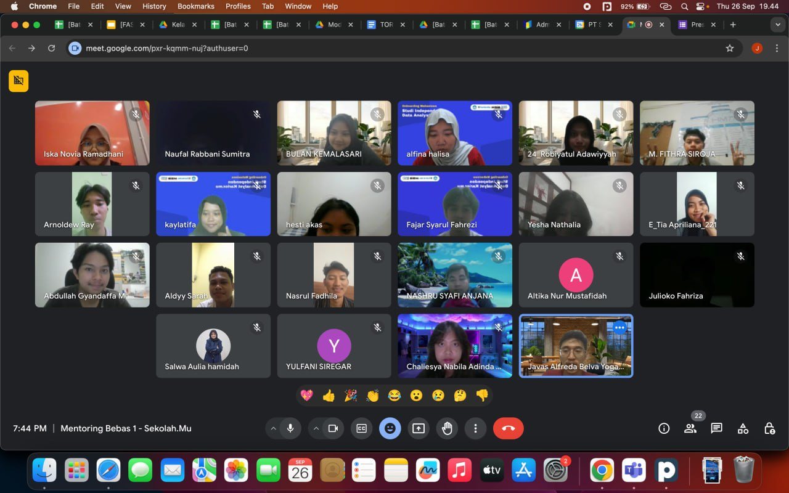
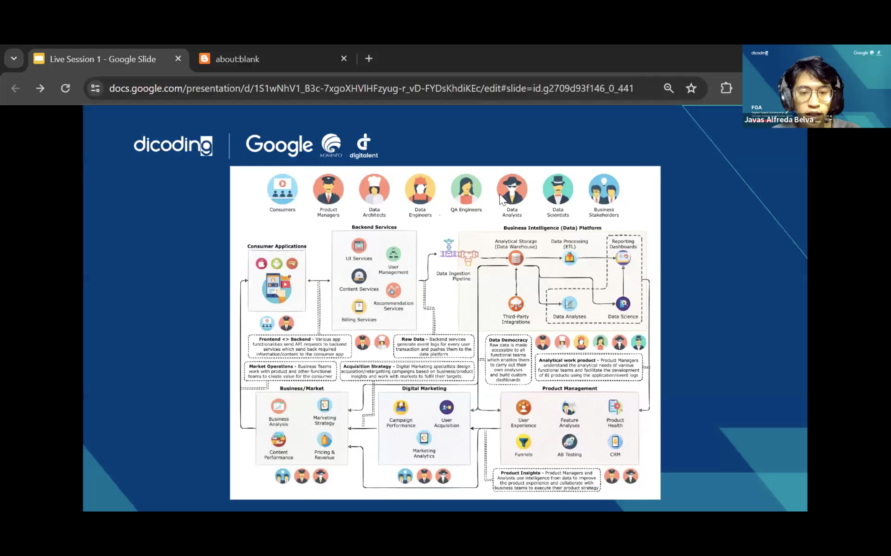
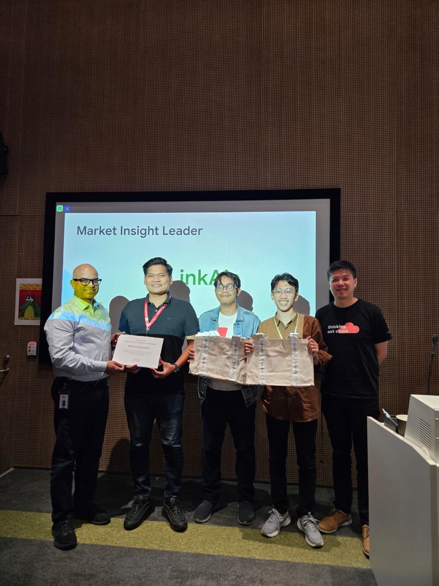
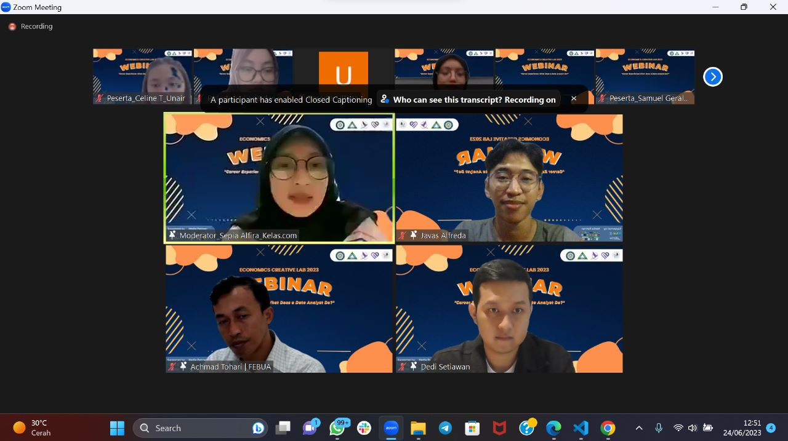
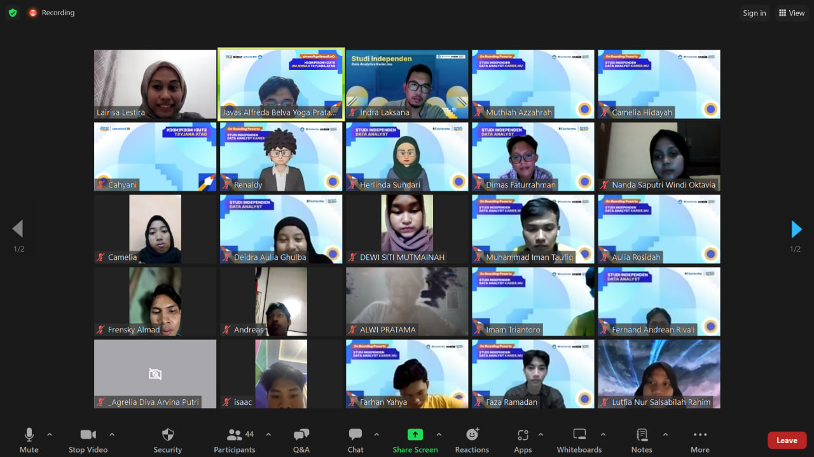
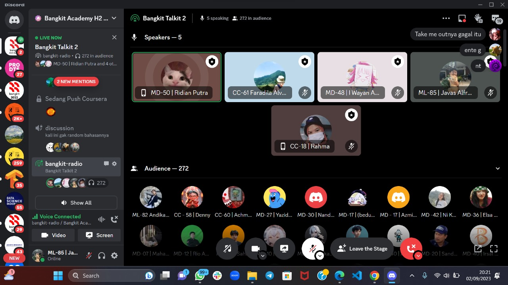
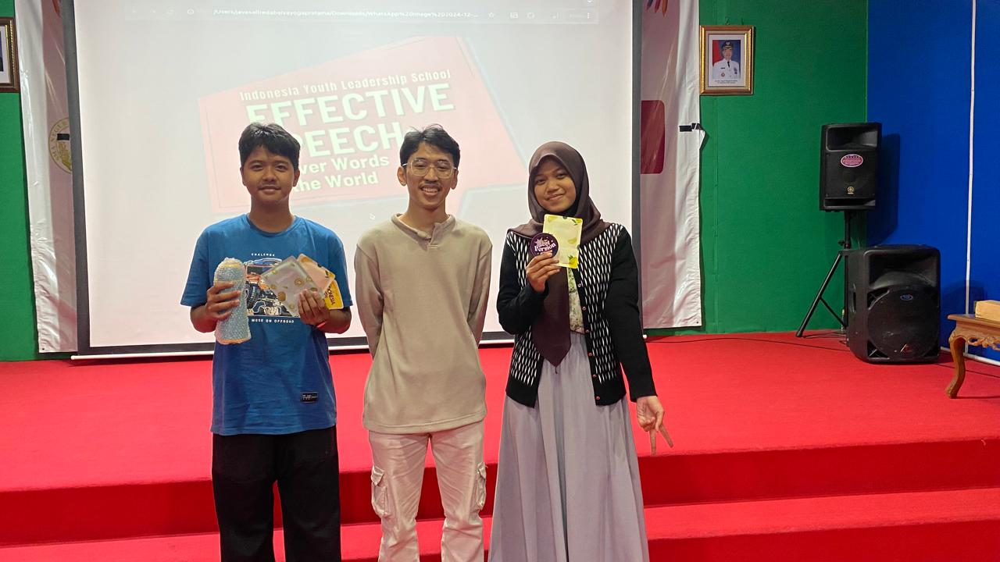
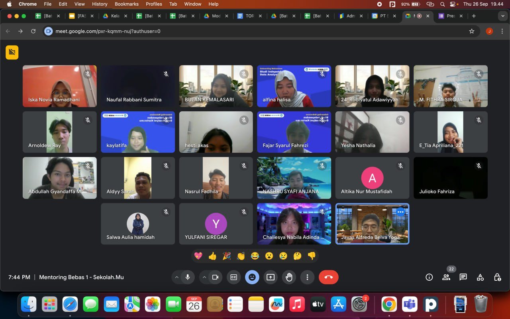
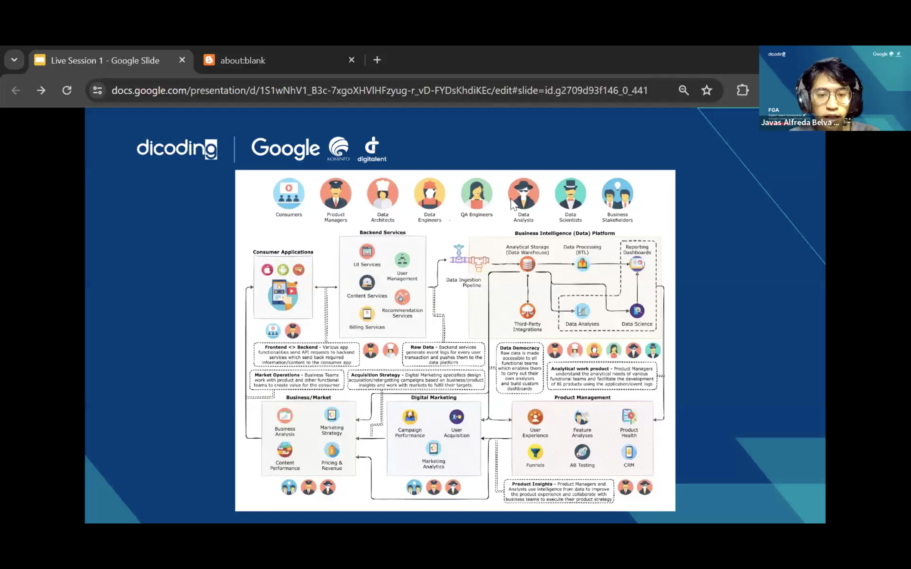